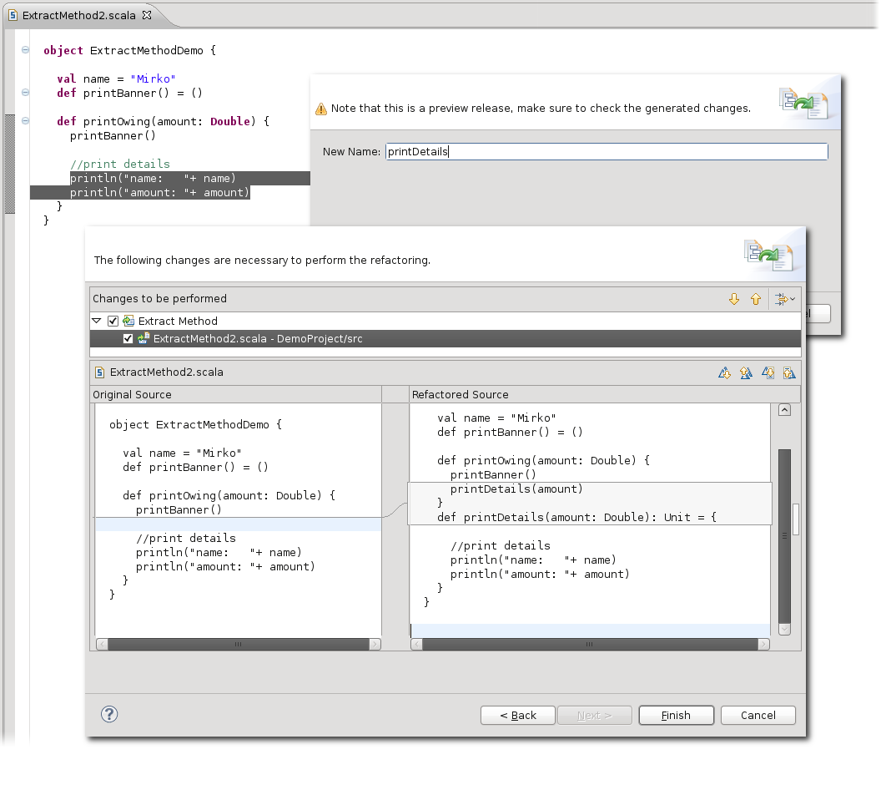

The Extract Method refactoring lets you extract one or many expressions into a new private method. The refactoring takes care of passing all necessary parameters to the method and returns all values that are needed.
To invoke the refactoring, a selection inside of a method has to be made. The refactoring wizard will then ask for a new name and show a preview of the changes:

Compared to Eclipse's Extract Method for Java, the Scala version currently lacks many features – for example, one cannot reorder the parameters, nor rename them. Allowing the user to choose where the extracted method should be placed also has not been implemented yet, and the visibility of the extracted method is always set to private.